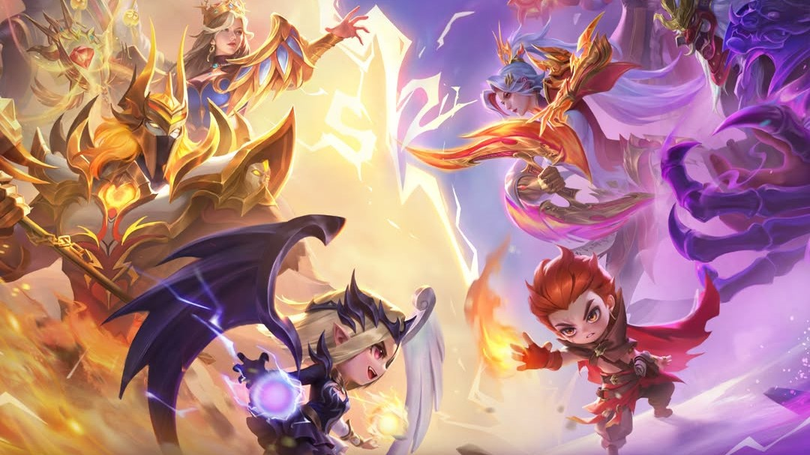
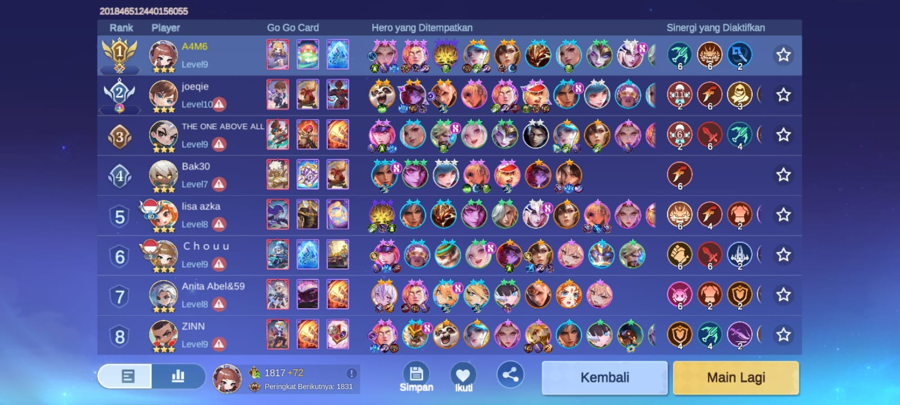

Bermain Magic Chees menggunkan comander Guin dan menggunkan strategi
Soul Vessels dan marksman, dengan
menggunakan hyper Dijiang untuk early game dan mid game
dan late gamenya menggunakan hyper Hanabi B3 dan Claude B3.
Combo ini cocok dipakai untuk push rank di Magic Chees Go Go,
namun anda juga harus pintar untuk menahan darah di awal game,
karena kombo ini anda akan roll di level atas.
Jadi konsep combo ini adalah anda menggunakan hper Dijiang untuk
awal-awal dan untuk tank nya anda bisa menggunakan dauntless atau
defender. Dan setelah hyper late game kita Hanabi sudah B2 dan level comander
kita sudah level 9 maka anda bisa langsung mengaktifkan 6 Soul Vessels
dan 6 marksman dan anda bisa menggunakan Gloo, Benedeta, dan Amon
untuk tank nya di late game.